Brooklyn Web Workers
tech, labor, live music • last Mondays at Easy Lover
Next event - October 26
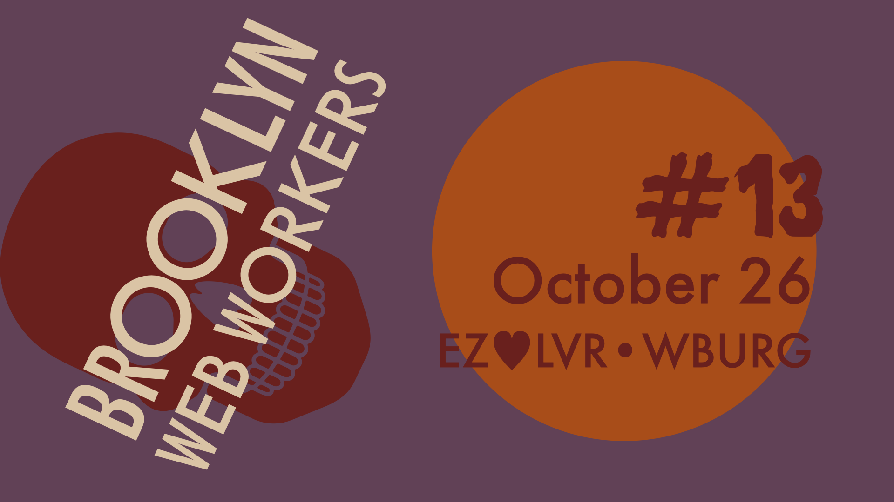
- Caroline Amaba - "Weird & Messy: early web aesthetics"
- Eric Bolton - "Building cityedit.org"
- Nick Montfort - "BASIC Poems and Artificial No-Mind"
- Music by Raven and Red
Past events
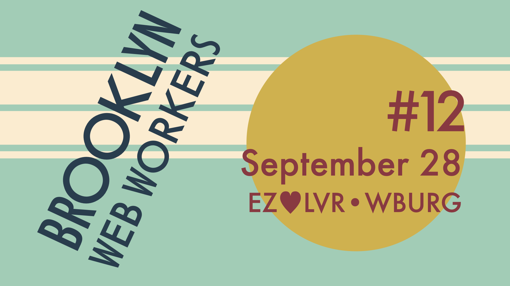
- Sumanth Srinivasan - "Ephemeral Forest: A post-modern web-based reader for The Mahabharata"
- Matthew Blanco - "In 26 Slides (or how I learned to stop worrying and love the MTA)"
- Evan Schwartz on Scour
- Music by the Landon Trust duo ft. Jeff Lewis
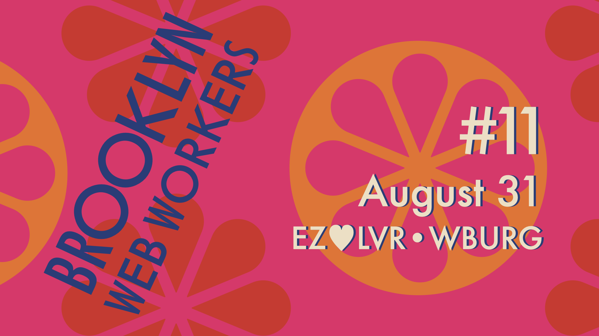
- Justin Falcone - "Building my TempleOS"
- Grant Custer on alternative user interfaces
- Jenna Zeigen with life lessons from the tech career ladder
- Music by Spell Pierce
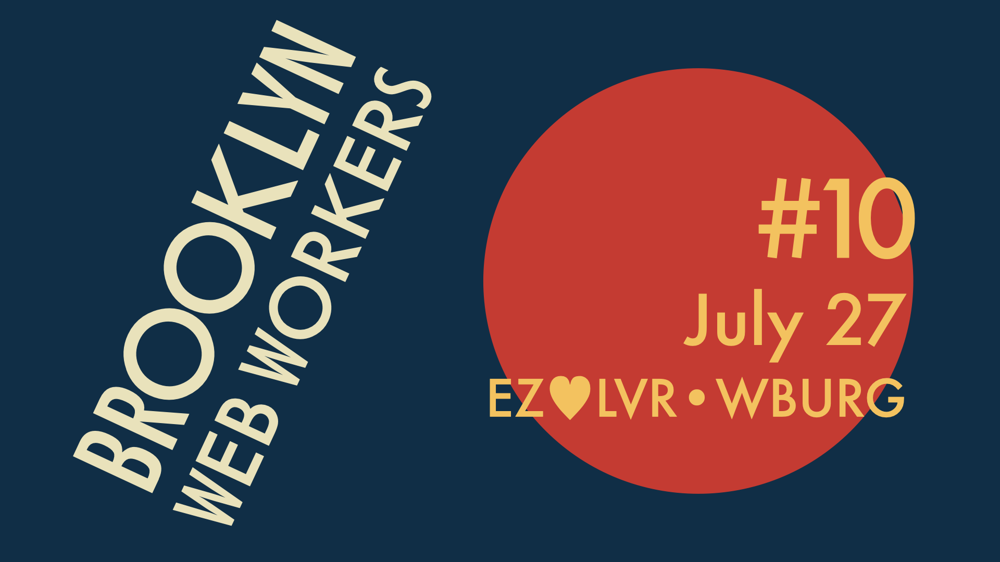
- Dustin Long - "Works Well With Others"
- Moon Davé on Processing
- Gwen Pasquarello - "How we run our worker co-op"
- Andrés Cuervo - "Compute Like Water"
- Music by Christian & Cole
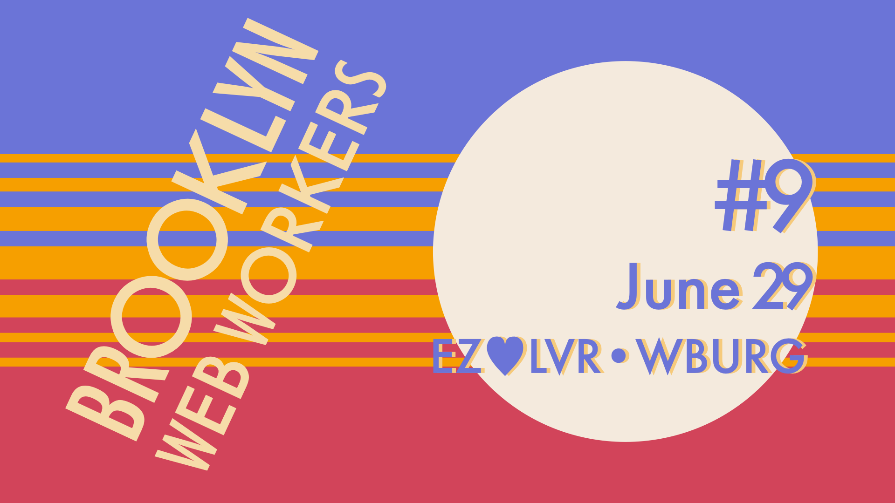
- Connie Liu - "values based software: tools and networks"
- Rich Harris - "Reclaiming AI"
- Bobby Grayson - "A Magnetic Media Adventure"
- Music by Meaner Pencil
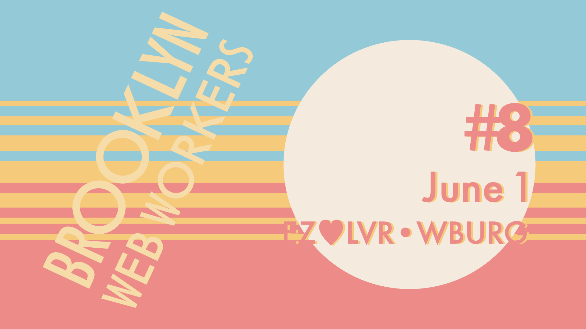
- Jake Lazaroff on atproto
- Ky Decker on hypertext.tv
- Ian Fisher on systems programming in Python
- Samantha Goldstein - "Mind the gap: between the virtual and corporeal realms"
- Music by Tim Davis
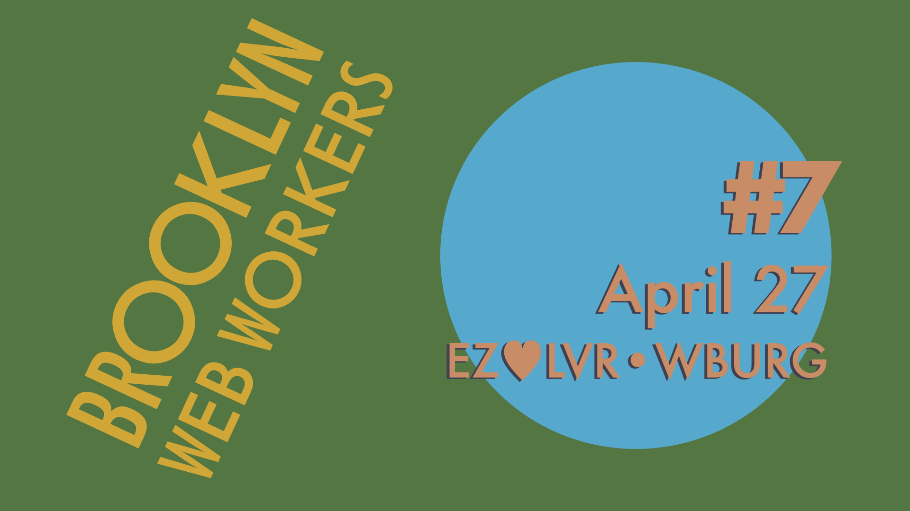
- Aram Zucker-Scharff - "Ad Tech: Broken by Design"
- Holland Blumer - "Creative Coding Through a Countercultural Lens"
- James Steinberg - "Clowns are eating software and making money"
- Daniel Temkin - "Forty-Four Esolangs: The Art of Esoteric Code"
- Music by Paulina Vo
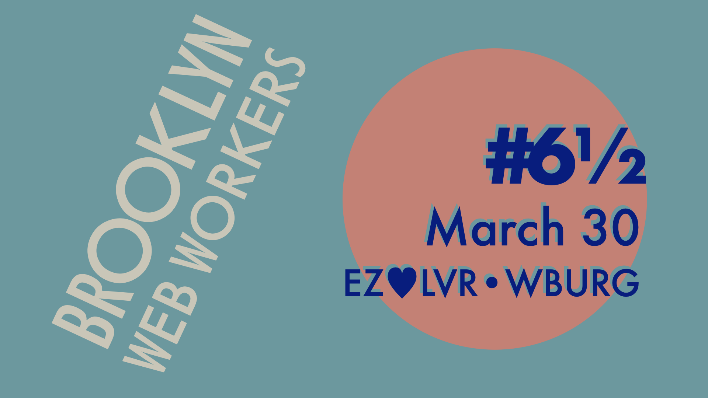
- Brandon Liu - "Maps as a new web primitive"
- Rose Kodsi-Hall - "Markdownlang: Comedy Driven Development"
- Jer Thorp on birding's long and increasingly problematic relationship with AI and big tech
- Music by the Cody Sisters
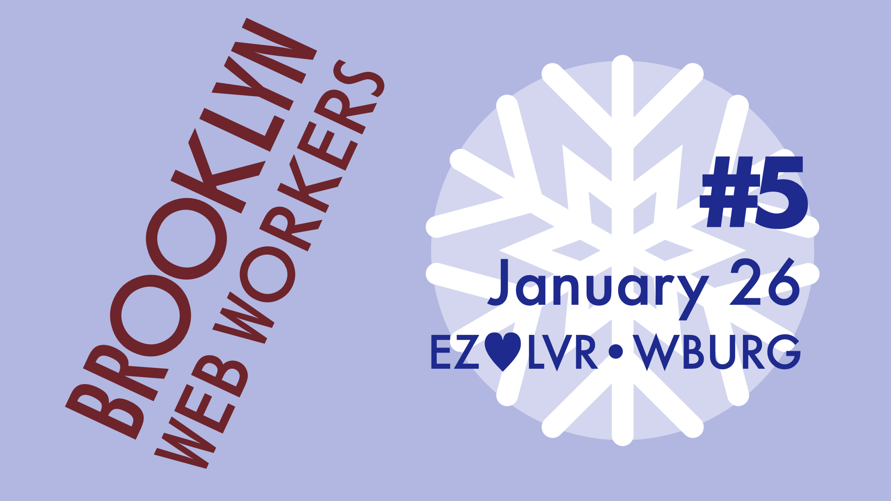
- Nolen Royalty - "What can we do with text?"
- Daniel Golant - "12 Factor Apps, 15 Years Later"
- Ingrid Burrington - "(How) Do Maps Make Money?"
- Music by Sky White Tiger
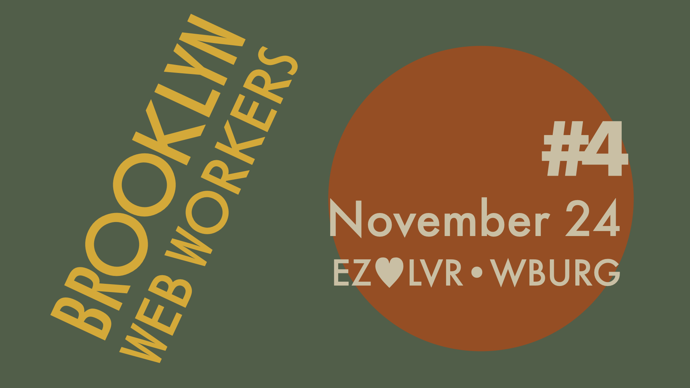
- Carl Vitullo - "What do you do after winning the startup lottery?"
- Kelin Zhang on Poetry Camera
- Henry Zhu - "Biblerot"
- Zelda Montes on No Tech For Apartheid
- Music by Elizabeth Devlin
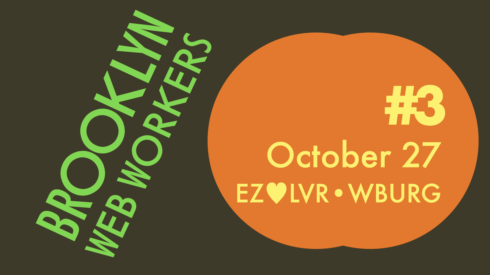
- Dustin Freeman - "Async Work Patterns: Remote Shouldn't Simulate In-Person, And Here's How!"
- Serena Chen - "Why Chrome Removed the Lock Icon"
- Adam Aaronson - "Square Theory"
- Aidan Feldman - "Civic Tech: or 'Why Can't You Just…'"
- Music by Annabelle Adelaide
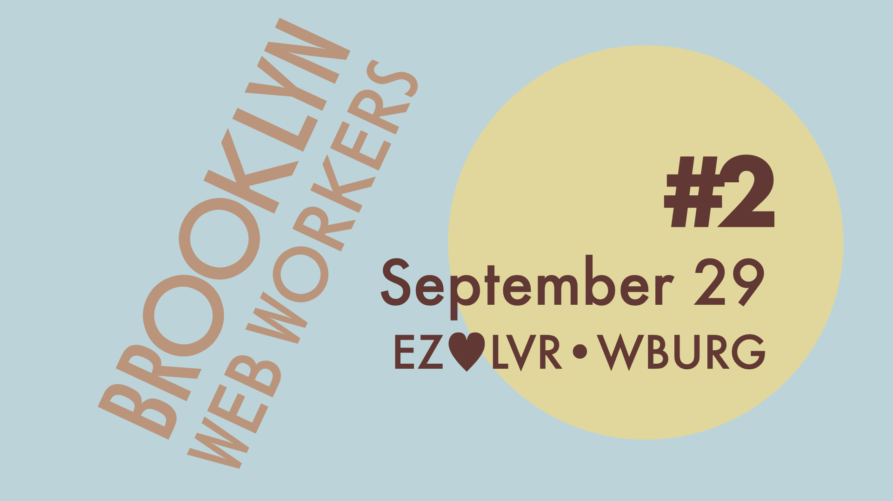
- Annabelle Adelaide - "Forth: A Vision of Human/Computing Interaction"
- Eli Gundry - "What's a dollar worth?: A story about knowing where your money comes from"
- Victoria Kirst - "Tales from a Creative Sabbatical"
- Dannel Jurado - "What you get when you finally form a union in tech: Kickstarter United 5 years on"
- Music by Corn Mo
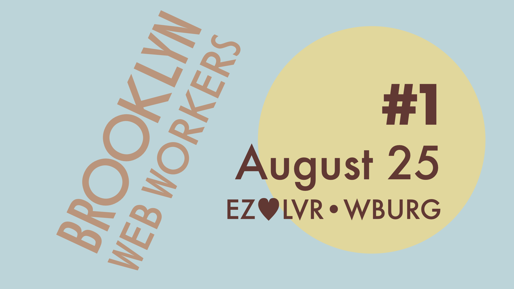
- Rachel White - "World Weird Web: exploring lesser known web APIs"
- Jia Jie Chen - "Notatio: the harmonics behind building a music card strategy game"
- Jenn Schiffer - "Hard Wax, Soft Skills"
- Hamilton Nolan - "The Labor Movement Can't Win Without Tech Workers"
- Music by Mani Nilchiani